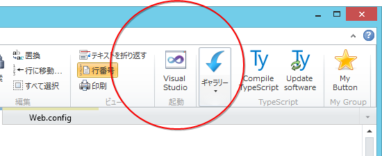
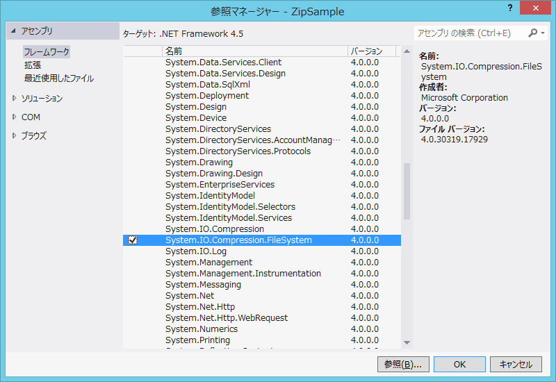
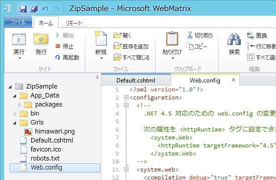
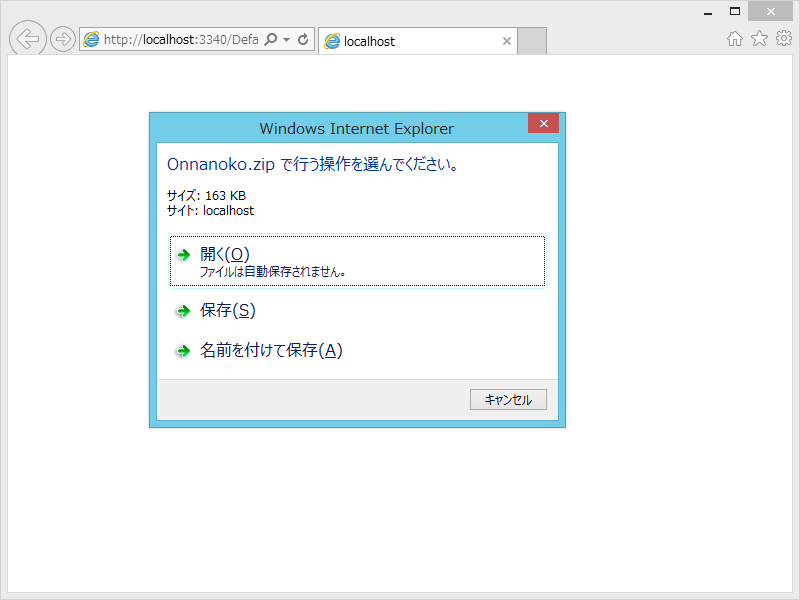
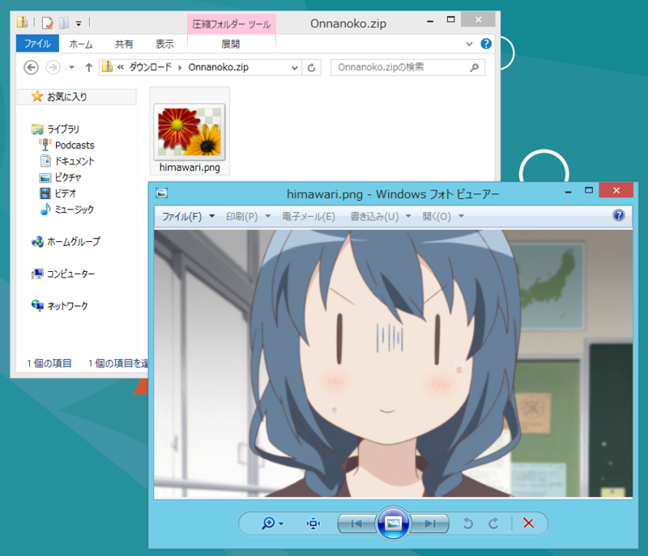
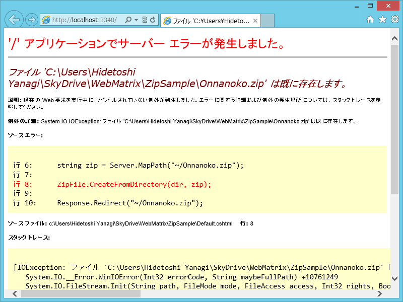
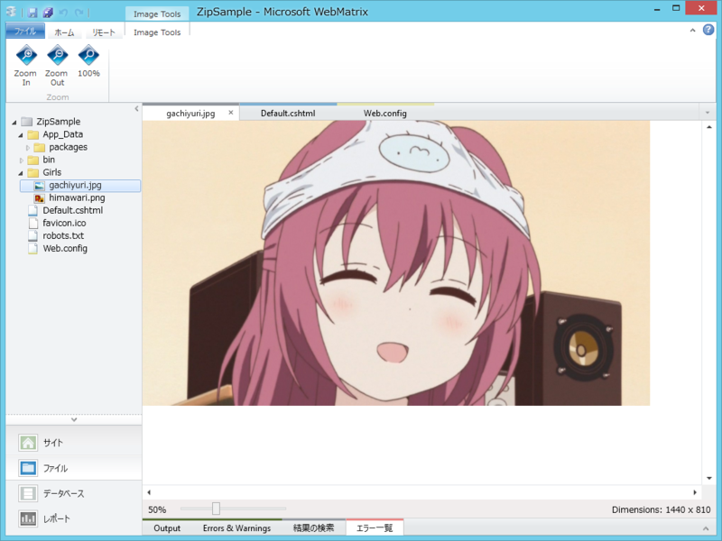
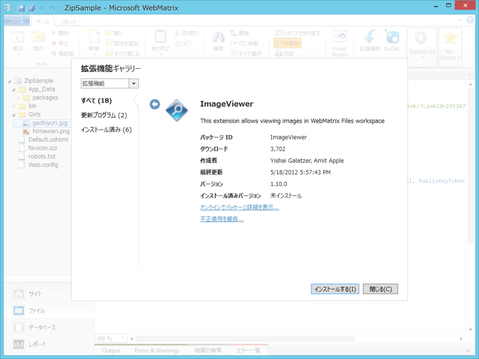

WebMatrix で女の子を落とす
公開日：
wget http://localhost/onnnanoko.zip で女の子落とせる
— Be玉さん (@BeMarble) 10月 19, 2012これは羨ましい！ わしも女の子落としたい！――できれば、WebMatrix で。
ヤりたいこと
まぁ、あらかじめ女の子を Zip で固めておいてアクセスし、「ほら、落ちてきました！」でもいいんだけど、せっかく WebMatrix でやるんだから圧縮ぐらいはオンデマンドでやってみたい。というわけで、
- http:// localhost: **** へアクセスすると
- Grirls フォルダに入っている女の子たちが
- Zip でまるごと圧縮されて
- 落ちてくる！（onnanoko.zip）
が今回の目標。
何も考えずに書いてみる
#Default.cshtml /* 全部消して以下のコードに置き換える */@using System.IO @using System.IO.Compression
@{ string dir = Server.MapPath("~/Girls"); string zip = Server.MapPath("~/Onnanoko.zip");
// ~/Girls を ~/Onnanoko.zip へ圧縮 ZipFile.CreateFromDirectory(dir, zip);
// ~/Onnanoko.zip をダウンロード Response.Redirect("~/Onnanoko.zip"); }
もちろん、これは動かない。WebMatrix 2 で作成される ASP.NET Web Pages は .NET Framework 4 をターゲットとしているけれど、ZipFile クラスは .NET Framework 4.5 で追加されたものだからだ。.NET 4 対応のライブラリを使ってこの問題を解決してもいいのだけど、もう誰かがやってそうな気もする。というわけで、今回は WebMatrix 2 のほうを .NET 4.5 で動かしてみることにしよう。
.NET Framework 4.5 で動作させる
まず初めに考えたのは、Web.config の書き換え。
<?xml version="1.0"?> <configuration> <system.web> // 4.0 を 4.5 に書き換え <compilation debug="true" targetFramework="4.5"> </system.web> </configuration>
しかし、これだけでは動かん。System.IO.Compression.FileSystem.dll を参照に追加せねばならないらしい……。くそぅ、どうやればいいんだ……WebMatrix には参照追加のためのユーザーインターフェイスがない……。ここでオレの、オレたちの夢は途絶えてしまうのか！？
お兄ちゃん！ 助けて！

そこで思い出したのが、「Visual Studio」。そう、ターンエーの「WebMatrix」のお兄さんだ！ まぁ、WebMatrix でもたいていのことはできるけど、やっぱり Visual Studio のほうが便利なところも多い。困ったときはサクッと切り替えるのも一つの手だぞ！

というわけで、参照マネージャーで DLL への参照を追加。すると、Web.config はこんな風に書き換わる。

<?xml version="1.0"?> <configuration> <!-- .NET 4.5 対応のための web.config の変更点の説明については、http://go.microsoft.com/fwlink/?LinkId=235367 を参照してください。次の属性を <httpRuntime> タグに設定できます。 <system.Web> <httpRuntime targetFramework="4.5" /> </system.Web> –> <system.web> <compilation debug="true" targetFramework="4.5"> <assemblies> <add assembly="System.IO.Compression.FileSystem, Version=4.0.0.0, Culture=neutral, PublicKeyToken=B77A5C561934E089"/> </assemblies> </compilation> <pages controlRenderingCompatibilityVersion="4.0"/> </system.web> </configuration>
さすが、ターンエーの「WebMatrix」のお兄さん！ っていうか、こんなの手で書いてられるかよ！ ＞ｗ＜
あとはこれを実行するだけだ！
親方！ 空から女の子が！

てぃーてぃーりりりー♪ てぃてぃーりりりー♬

うおおお！ ちゃんと女の子が落せた！ 万歳……っ！……万歳っ……！

でも、リロードしたらエラーが発生したので、ちゃんとファイルの存在チェック＆削除のロジックを入れておかねばならぬ。
@using System.IO @using System.IO.Compression@{ string dir = Server.MapPath("~/Girls"); string zip = Server.MapPath("~/Onnanoko.zip");
if (File.Exists(zip)) { File.Delete(zip); }
ZipFile.CreateFromDirectory(dir, zip);
Response.Redirect("~/Onnanoko.zip"); }
がちゆりさんを足してみた

初回テストでは、Girls フォルダに向日葵ちゃんしか入っていなかったけれど、これはちょっと寂しい。というわけで、複数ファイルも行けるかどうかのテストを兼ねて、Girls フォルダにがちゆりさん（赤座あかねとは (アカザアカネとは) [単語記事] - ニコニコ大百科）を追加。
結果はもちろん成功！
……というわけで、本日のネタは Web サイト/アプリに「Zipでくれ」機能を付ける、でした！

ちなみに、WebMatrix で画像のプレビューをするには「ImageViewer」拡張機能をインストールするんだよ。
おまけ：これ、デプロイできんの？
ローカルで動くのはわかったけど、これリモートでも動くんだろうか。答えは「やれないことはないけれど、もう少し待て」。そのうち Azure Web Sites が .NET 4.5 に対応してくれるみたいだから、それを使えば楽にできそう。 Express Web のほうも対応してくれたらありがたいのだけどね。